← → para cambiar de opción · Esc para cerrar

Nexus · BAU 2027Las cabeceras de la landing saldrán del vídeo Nexus, que tiene un fondo azul. Comparamos la landing actual con dos opciones: las imágenes del vídeo sobre el fondo grafito actual (A) o sobre el azul del propio vídeo (B).
Las imágenes son fotogramas provisionales del vídeo: en la versión final cada cabecera estará animada.
← → para cambiar de opción · Esc para cerrar